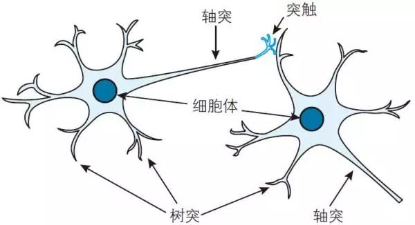

第一章 AI 通论
1.1 UI/UX 专业的现状、趋势与要求
1.1.1 美国 UI/UX 专业的现状
目前美国大学提供各种形式的 UI/UX（用户界面/用户体验）相关专业。 这个领域是跨学科的，所以你会在不同的学院和系找到相关的课程和学位。
常见专业设置形式
- 人机交互 (Human-Computer Interaction, HCI)： 这是 UI/UX 领域最核心的学术方向，通常设在计算机科学、信息科学、信息学院或工程学院下。许多顶尖大学都有独立的 HCI 研究中心或学位。
- 例如： 卡内基梅隆大学 (CMU) 的 M.HCI、佐治亚理工学院 (Georgia Tech) 的 MS-HCI、华盛顿大学 (University of Washington) 的 MHCI+D；
- 交互设计 (Interaction Design, IxD)： 强调用户与产品或系统之间的交互方式设计，通常在设计学院或艺术学院下。
- 例如： 纽约视觉艺术学院 (SVA)、帕森斯设计学院 (Parsons)；
- 用户体验设计 (User Experience Design, UX Design)： 直接以 UX Design 命名的专业，通常在信息学院、设计学院或商学院下。
- 例如： 密歇根大学 (University of Michigan) 的 MSI (Human-Computer Interaction specialization)；
- 信息科学 / 信息学 (Information Science / Informatics)： 许多信息学院的硕士项目都会有 HCI 或 UX Design 的专业方向或课程；
- 计算机科学 (Computer Science, CS)： 很多 CS 系会提供 HCI 或 UX 方向的硕士或博士研究，但通常更侧重于技术实现和研究；
- 工业设计 (Industrial Design) 或平面设计 (Graphic Design)： 这些传统设计专业也越来越多地整合了数字产品设计和 UX 思维，但可能不是纯粹的 UI/UX 专业；
1.1.2 AI 时代下的发展
UI/UX 专业和实践在 AI 时代将发生显著的演变，但其核心价值（以用户为中心）不会改变。AI 带来的影响是颠覆性的，它将：
-
自动化部分低级/重复性任务：
- AI 工具可以帮助设计师自动生成各种设计变体、布局、甚至是基于设计稿的前端代码。这将释放设计师的时间，让他们专注于更复杂、更高层次的思考；
UI/UX 技能要求：对 AI 工具的熟练运用，以及更强的审美判断和指导能力；
-
催生全新的交互范式：
- 对话式 UI (Conversational UI, CUI) 和语音 UI (Voice UI, VUI)： AI 是语音助手、聊天机器人等 CUI/VUI 的核心。UX 设计师需要设计对话流程、语气、人格，而不仅仅是图形界面；
- 自适应 UI (Adaptive UI) 和个性化体验： AI 能根据用户行为、偏好和情境实时调整界面内容和功能，提供高度个性化的体验。UX 设计师需要理解 AI 模型的运作，设计透明且可控的个性化选项；
UI/UX 技能要求：对话设计、语言学知识、多模态交互设计、算法理解、隐私与信任设计；
-
对解释性 AI (Explainable AI, XAI) 和信任的需求：
- 当 AI 系统做出决策时（例如推荐、诊断），用户需要理解这些决策的依据。UX 设计师必须设计出清晰、透明的界面来解释 AI 的工作原理和局限性，建立用户信任；
UI/UX 技能要求：AI 伦理、数据素养、可视化 AI 决策、信任构建策略；
-
更加强调数据和系统思维：
- AI 设计需要大量数据。UI/UX 专业人士需要更强的能力来理解数据如何收集、标注和训练 AI 模型，以及他们的设计选择如何影响数据质量和模型性能；
- AI 系统往往是复杂的生态系统，UX 设计师需要具备更强的系统思维，设计整个用户旅程中 AI 与人、AI 与其他系统之间的交互；
UI/UX 技能要求：数据分析、A/B 测试、系统架构理解、跨学科协作（与数据科学家、AI 工程师、产品经理）；
-
设计中的伦理与社会影响：
- AI 可能带来偏见、歧视等伦理问题。UI/UX 设计师将肩负重任，确保 AI 系统的设计是公平、负责任且符合社会价值观的；
UI/UX 技能要求：AI 伦理、负责任的 AI 设计、社会学洞察；
UI/UX 领域不会消失，但它会从传统的“屏幕界面设计”向更广阔的体验设计和智能交互设计方向演进。未来的 UI/UX 专业人士将需要：
- 更强的战略和研究能力： 解决更复杂的用户问题和商业挑战；
- 更深的 AI 技术理解： 不仅是用户界面，还要理解 AI 系统的后端原理；
- 更多元化的技能集： 对话设计、AI 伦理、数据分析、人因工程、系统思维等；
- 更紧密的跨学科协作： 与 AI 工程师、数据科学家、产品经理、伦理学家等紧密合作；
所以，目前的 UI/UX 专业将会在课程内容上进行大量更新，以适应这些新趋势，培养出能够设计下一代智能产品的设计师。核心的“以用户为中心”的设计原则依然不变，但“用户”和“中心”的含义将因 AI 而变得更加丰富和复杂。
1.1.3 对个人能力要求的变化
AI 时代的 UI/UX，从“会画好看的界面”进化为“能设计可控、可理解的人机协作方式”。这要求艺术转变、理工升温，尤其是 AI 与逻辑的跨界能力。
-
艺术/美学方面的要求：
- 不是“降低”而是“转变”和“提升效率”。 AI 强大的生成能力（例如，自动生成布局、颜色方案、图标变体）确实可以辅助甚至自动化一些基础的视觉设计执行工作；
- 但这并不意味着设计师不需要艺术和美学素养。相反，设计师需要更强的判断力、鉴赏力、指导力和策展能力。你需要能够评估 AI 生成的设计稿是否符合品牌调性、用户心理、可用性原则，并能够精准地引导 AI 产出更优质、更具创意和情感共鸣的设计。最终的审美判断和视觉方向的战略制定，仍然是人类设计师的核心价值；
- 所以，可能从“手绘像素”的技能要求上有所减轻，但从“艺术指导”和“视觉策略”的要求上反而可能更高。从“会画”转向“会表达概念和交互意图”；
-
理工上对 AI 的理解：
- 大幅增强。 这不仅仅是对 AI 工具使用的理解，更重要的是对 AI 系统底层逻辑、能力、局限性、数据依赖和潜在偏见的理解；
- 与数学的关联： 对 AI 的理解确实需要一定的数学基础，尤其是统计学、概率论和线性代数的基本概念。这不是要求 UI/UX 设计师成为 AI 模型的开发者或数据科学家，而是要求他们能够：
- 理解数据偏差： 数据如何收集、标注、训练，以及可能导致算法出现偏见的地方；
- 理解模型决策： 为什么 AI 会给出这样的推荐或判断，其决策过程的逻辑是什么；
- 评估 AI 系统： 如何进行用户研究和可用性测试，以评估 AI 系统的性能和用户体验；
所以，“理工方面”的增加，更多体现在计算思维（Computational Thinking）、数据素养（Data Literacy）和系统思维（Systems Thinking） 的增强。你不一定要写模型，但你要能站在用户和模型之间搭桥，这需要一定的抽象思维和逻辑分析能力——这是理工科的基本素质之一。
-
人文方面的要求：
- 不仅没有降低，反而可能更加重要。 AI 时代带来了前所未有的伦理、社会和心理挑战。UI/UX 设计师在以下方面将发挥关键作用：
- AI 伦理设计： 如何设计 AI 界面以确保透明度、公平性、可解释性，并避免歧视和滥用；
- 信任与控制： 如何设计用户界面，让用户能够信任 AI 系统的决策，并对 AI 的行为拥有适当的控制权；
- 用户研究的深化： 研究用户如何与 AI 系统交互、他们的期望、恐惧和行为模式；
- 沟通能力： 更好地与 AI 工程师、数据科学家等技术背景的团队成员协作；
- 不仅没有降低，反而可能更加重要。 AI 时代带来了前所未有的伦理、社会和心理挑战。UI/UX 设计师在以下方面将发挥关键作用：
1.2 AI 基础名词与概念
1.2.1 为什么我们要知道 AI 基础名词
- 我们会碰到：我们在 AI 的使用过程、和 AI 相关的读物中会经常遇到这些名词；
- 提问更有效：知道怎么写 prompt，让 AI 更听话；
- 避免被唬住：理解幻觉问题，知道哪些回答可能是 AI 编的；
- 用得更高级：知道怎么调用文件、知识库，让 AI 回答你自己的资料；
- 拓展应用场景：识别哪些场合要用 ChatGPT，哪些可以用插件、API 或 RAG；
1.2.2 常见 AI 名词
| 术语 | 简要解释 | 关键词关系 |
|---|---|---|
| 1. LLM（大型语言模型） | Large Language Model，如 ChatGPT、Claude、Gemini。训练自海量文本，能理解和生成语言。 | 所有 AI 聊天功能的“大脑” |
| 2. Prompt（提示词） | 你输入给 AI 的内容，比如问题或任务说明。 | Prompt → 输入到 LLM |
| 3. Prompt Engineering | 设计有效 prompt 的技巧，让 AI 按你的意图回答。比如加上背景说明、格式要求。 | 优化 Prompt → 提高 LLM 回答质量 |
| 4. Chat History / Memory（聊天记录/记忆） | AI是否能记住你说过什么。带记忆的模型能在未来对话中引用过去内容。 | 连接多个 prompt → 构建上下文 |
| 5. Token（词元） | 模型处理语言的最小单位（可以是词、词的一部分或标点），影响上下文长度和成本。 | 影响 Prompt 长度、价格与速度 |
| 6. Fine-tuning（微调） | 让模型“重新训练”以适应特定场景。用于企业或开发者。 | 改变 LLM 的行为基础 |
| 7. Embedding（向量嵌入） | 把文本转成“向量”以计算相似度。用于搜索、RAG、推荐系统。 | 底层机制 → 支撑记忆、搜索 |
| 8. RAG（检索增强生成） | Retrieval-Augmented Generation，把外部知识（如PDF、网页）引入回答中。 | 提供 LLM 不知道的信息 |
| 9. Hallucination（幻觉） | 模型编造不真实内容。用户需警惕并核查答案来源。 | LLM 的副作用，Prompt 可缓解 |
| 10. API（应用接口） | 用于程序调用 AI 模型的方式，不直接面对用户，但在网站或软件背后运作。 | 支撑 Chat、插件、第三方工具 |
| 11. System Prompt / 指令 | 开发者设定的“隐形角色设定”，决定模型行为。例如“你是一位专业老师”。 | 控制 LLM 角色和风格 |
| 12. Multimodal（多模态） | 模型能理解文字、图片、声音等不同类型的输入。 | 例如：图文并茂的问答能力 |
| 13. Agent（智能体） | 一个具备自主决策、执行、多步任务能力的 AI 实体。它可以基于目标自动调用模型、工具、知识、接口，完成用户任务。 | 构建于 LLM、Prompt、RAG、Memory、API 等之上 |
1.2.3 RAG, Embedding, Fine-tune 的关系
三个概念的比对
| 项目 | RAG（检索增强生成） | Embedding（向量嵌入） | Fine-tune（微调） |
|---|---|---|---|
| 🔧 本质 | 一种结构化系统设计 | 一种数据处理方法 | 一种模型训练方法 |
| 🎯 目的 | 给模型“实时查资料” | 用于“计算语义相似度” | 让模型“学会新技能”或“改性格” |
| 🧩 是否改模型 | ❌ 不改 LLM，本体不变 | ❌ 不改 LLM，只是加数据 | ✅ 改 LLM 参数 |
| 🔄 是否动态 | ✅ 动态查找内容 | ✅ 动态生成向量 | ❌ 静态一次训练完成 |
| 🔍 是否需要记忆 | ✅ 通常搭配记忆系统 | ✅ 记忆靠向量数据库 | ❌ 记忆靠模型记住 |
| 📚 举例 | GPT 查询你上传的PDF来回答 | “猫” 和 “小猫” 的语义距离很近 | 让模型会讲广东话、懂你公司产品 |
Embedding 是 RAG 的底层支撑
Embedding 是一种把文本转换为向量的技术。
1.2.4 AI 智能体（Agent）
Agent 是一个“主动工作”的 AI，不再只是回答问题，而是能规划、执行和自我调整。
Agent 的核心能力模块
| 能力 | 简要说明 |
|---|---|
| 任务规划 | 多步拆解：先干什么，再干什么 |
| 工具调用 | 接 API、访问网页、调用函数 |
| 记忆能力 | 记住当前步骤、任务上下文 |
| 自我反思 | 检查输出是否符合要求，自我修正 |
| 长时交互 | 可以在几个小时内断续工作，跟踪目标状态 |
例子
假设你对 Agent 说：
“帮我看这本 PDF，总结要点并发邮件给我的团队。”
一个具备智能体能力的系统将：
- 识别目标（读PDF → 提炼 → 总结 → 写邮件 → 发出）；
- 自动检索资料（RAG）；
- 分阶段使用 LLM 来提取、润色、重构；
- 调用外部工具（如邮箱API、日历接口）；
- 根据反馈自动重试（比如邮件失败就重发）；
1.3 人类是如何学习知识的
这是个非常本质的问题，人类学习的核心不是“记住信息”，或者会做某些习题。而是将信息纳入个体已有的知识网络中，使其具有意义。人类学习的本质是主动构建与修正认知模型。
1.3.1 学习的目的
人类学习的目的是最起码要能够获得迁移应用的知识。人类学习的底线指标是：是否能将所学用于陌生场景下的“问题识别 + 解决策略构建”中。
能够迁移是学习的核心指标。只有当你能在不同题型、不同科目、真实生活、陌生任务中灵活运用所学，这才是知识的“拥有权”，不是“租用权”。
- 建构了知识网络；
- 掌握了抽象规则；
- 能在变化的场景中识别出不变的部分；
没有迁移，意味着学习只停留在“表层加工”：
- 背了历史事件，但不知道它和现实政治有什么关系；
- 会解方程，但不知道如何用它建模生活问题；
- 背了定义，但换种问法就答不出；
1.3.2 神经元、连接、裁剪与学习
在生物大脑中，以上这些元素共同构成了一个动态的适应性系统，使我们能够学习、记忆和适应环境。

神经元 (Neuron)：
- 概念： 大脑和整个神经系统的基本功能单位。它们是专门的细胞，通过电信号（动作电位）和化学信号（神经递质）来接收、处理和传递信息；
- 作用： 它们是信息处理和存储的“处理器”；
连接 (Connections) / 突触 (Synapses)
- 概念： 神经元之间进行信息传递的“交流点”被称为突触。一个神经元可以与成千上万个其他神经元形成突触连接；
- 作用： 这些连接的“强度”（或效率）是可变的，它们决定了信息从一个神经元传递到另一个神经元的有效性。突触强度是学习和记忆的物理基础；
学习 (Learning)
- 概念： 在生物体中，学习是指大脑通过改变神经元之间的连接（突触）来获取新知识、新技能或改变行为模式的过程；
- 过程： 当我们进行新的经验、重复某种行为或思考某种概念时，特定的神经元回路会被激活。这种激活会导致相关突触的结构和功能发生变化，使其连接更有效率或更持久。这种现象称为突触可塑性（Synaptic Plasticity）
- LTP (Long-Term Potentiation，长时程增强)： 频繁激活的突触连接会变得更强、更有效率。这被认为是学习和记忆形成的主要机制之一（“一起兴奋的神经元，连接得更紧密”）；
- LTD (Long-Term Depression，长时程抑制)： 不太重要的或不常使用的突触连接可能会被削弱；
剪枝 (Pruning) / 突触修剪 (Synaptic Pruning)
- 概念： 这是一个关键的神经发育和学习过程，指的是大脑自然地消除冗余、不活跃或无效的突触连接；
- 作用：
- 优化效率： 移除不必要的连接可以使大脑网络更高效、更专注，就像修剪掉植物的多余枝叶，让养分集中在核心部分；
- 适应环境： 它帮助大脑在发育过程中根据实际经验来“塑造”自身，保留重要的连接，去除不重要的连接；
- 提高处理速度： 减少网络中的“噪音”和冗余路径，从而提高信息处理的速度和清晰度；
神经元、连接、剪枝与学习的整体过程
想象一下一个孩子学习走路：
- 早期发展（连接的“爆发式”形成）： 婴儿出生时，大脑会形成过剩的突触连接，像一张极其茂密但未经修剪的森林。这时大脑具有极高的可塑性，准备接收各种信息；
- 学习与强化（经验塑造连接）：
- 孩子开始尝试走路。每次她尝试、跌倒、再爬起来，都会激活与平衡、肌肉协调、视觉反馈相关的特定神经元回路；
- 那些与成功学会走路相关的神经元连接（例如，如何保持平衡的信号传递路径）会因为频繁的激活而逐渐被强化（LTP），变得更稳定、更有效率；
- 而那些导致跌倒、不协调的无效或不重要的连接则可能被忽略；
- 剪枝（优化与精炼）：
- 随着孩子学会走路并变得熟练，那些很少被使用、效率低下或在尝试过程中被证明是错误/冗余的突触连接，就会被大脑自然地修剪掉；
- 这个过程使得大脑网络更加精简、高效，专门用于走路的神经通路变得更加优化；
- 这也是为什么儿童在某些敏感期学习语言或技能特别快，因为他们的大脑在那个时期有大量的连接形成和修剪，可以快速适应和优化；
- 持续适应： 这种形成、强化和修剪的循环会贯穿人的一生。当我们学习新技能、适应新环境时，大脑会不断地调整突触连接，增强重要的，修剪不重要的，从而保持持续的学习和适应能力；
总而言之，生物体中的学习是一个高度动态的过程：神经元通过突触形成连接，经验会强化重要的连接，而剪枝则负责修剪掉那些不重要或冗余的连接，共同塑造了一个高效、适应性强的神经网络——我们的大脑。
1.3.3 三个基本过程
1. 感知（Perception）
人类通过感官（视觉、听觉、触觉等）接收外界刺激，这是原始数据的来源。比如你看到“苹果”，听到“自由落体”。
2. 加工与理解（Processing）
大脑会将感知到的信息与已有知识结构连接起来。这个过程涉及：
- 注意力系统：决定我们关注什么；
- 工作记忆：临时加工信息，如“短时记忆”；
- 长期记忆调用：从过去经验中找相似的知识框架；
这就像你听到“自由落体”时，会联想到牛顿、重力、加速度等。
3. 编码与固化（Encoding & Consolidation）
信息会被重新组织，嵌入到脑中的知识网络。形成所谓的**“schema（图式）”**。重复、多模态输入（听、说、写、做）或情绪参与能增强这一过程。
1.3.4 知识的形成是“连接主义”
大脑通过突触可塑性（Synaptic Plasticity）实现学习：
- 学习时，大脑中相关的神经元连接会被加强（或削弱）；
- 重复使用的通路会变得更牢固（“用进废退”）；
这和神经网络训练的“权重调整”非常相似——多次刺激 → 权重更新 → 模型记忆增强。
1.3.5 类比 AI 的学习过程
人类 ≠ 只接收数据，而是做以下几件事：
| 人类大脑机制 | 类比 AI 模型 |
|---|---|
| 感知输入 | 数据预处理/Input Embedding |
| 意义提取 | 模型结构学习特征 |
| 网络连接变化 | 权重调整/Loss 下降 |
| 强化回路 | 反馈优化（如 RL） |
1.3.6 学习是一个循环系统
感知 → 理解 → 记忆 → 应用 → 反馈 → 再学习。
- 通过感官接收信息（输入）；
- 在已有知识图谱中寻找联结（理解）；
- 通过情绪、重复、结构化固化为长期记忆（存储）；
- 在实践中不断检验与调整（反馈+重构）；
1.4 AI 对人类学习的冲击
AI已经极大提升了学生获取信息的速度和效率，但这种“外包式认知”也带来了几个核心弱点，如果不加以关注，会让获得答案变成失去个人能力。
1.4.1 动机转向“效率驱动”而非“意义驱动”
问题： AI使用带来即时满足，使学生关注“如何最快完成任务”，忽略了“为什么学这件事”。
后果：
- 学习目标变成“完成一份作业”，而非“理解一个原理”；
- 缺乏持久好奇心与内在动机；
- 学习无法产生长期改变；
✅ 对策： 教育者应引导学生将AI当成探索伙伴而非作业完成器，并将“做中学”“教中学”“应用中学”纳入设计。
1.4.2 认知偷懒（Cognitive Offloading）导致理解能力下降
问题： 学生越来越依赖AI直接给出答案，而不是自己推理或建构解题思路。
后果：
- 缺乏对知识的结构性理解；
- 无法迁移所学知识到新情境；
- 解题“看似懂了”，但考试换个题目就不会；
✅ 对策： 鼓励学生先思考再求助AI，让AI只提供线索、类比或逻辑检查，而非直接给答案。
1.4.3 批判性思维能力退化
问题： 学生容易把AI生成的内容“照单全收”，缺乏质疑与辨别能力。
后果：
- 无法识别AI输出中的错误或偏见；
- 无法进行深度对比或观点冲突分析；
- 在写作与讨论中出现“套话、空话”而非深度观点；
✅ 对策： 训练学生用Socratic questioning或三问法挑战AI输出，例如：
- 它的依据是什么？
- 是否有其他解释？
- 答案的前提是什么？如果这个前提不成立，结论还有效吗？
1.4.4 元认知能力薄弱：不知道自己“不知道什么”
问题： AI给出“合理表面答案”掩盖了学生的知识盲点。
后果：
- 学生错觉“已经掌握”，但无法独立重建知识；
- 测验中暴露出“看得懂却做不出”的情况；
- 缺乏反思与知识框架建设能力。
✅ 对策： 让学生刻意复述+类比+错误分析，而非仅“复制粘贴”AI答案。
1.4.5 自己学习的效率问题
真正长久记住的、能迁移应用的知识，都是通过主动建构 + 错误修正内化来的。
1.4.6 总结
| 弱点 | 核心症状 | 风险 | 推荐对策 |
|---|---|---|---|
| 动机外移 | 为交作业而学 | 浅层、短期学习 | 强调学习意义与探索欲 |
| 认知偷懒 | 一问AI就出答案 | 不会思考与迁移 | 要求先思考再询问 |
| 缺乏批判性 | 无判断能力 | 接受错误、偏见 | 训练质疑AI的能力 |
| 元认知薄弱 | 不知道不会 | 错误自信 | 鼓励总结+复述+反思 |
1.4.7 例子
Q: 通过AI你知道如何计算动量、动能，但是AI把答案告诉你，但是你却不知道动量，动能在整个物理体系大厦中的作用，地位和使用场景，你觉得学生学习到了知识吗？
知识不是“能解题”这么简单，而是要能解释世界、预测结果、连接其他概念、指导行动。
我们用布鲁姆的认知分类法（Bloom’s Taxonomy）可以清楚说明：
| 层级 | 举例 | 学到了吗？ |
|---|---|---|
| 1. 记忆 | 背公式：p = mv，K = ½mv² | ❌ 不算 |
| 2. 理解 | 能解释动能是什么 | ✅ 初步 |
| 3. 应用 | 会用动量公式解题 | ✅ 技术层面 |
| 4. 分析 | 能区分什么时候该用动量，什么时候不能 | ✅ 高层次理解 |
| 5. 综合 | 能将动量与能量守恒结合分析物理系统 | ✅ 核心能力 |
| 6. 创造 | 设计实验验证动能转化与损失 | ✅ 深度掌握 |
AI给出的通常只覆盖前两层，甚至只是机械地帮你“代入”。
1. 物理体系中“动量”与“动能”的位置图
在力学领域中，牛顿三大定律是基础框架，而“动量”与“动能”分别对应两种守恒律：
| 名称 | 作用类型 | 属于哪类守恒 | 与谁配套使用 |
|---|---|---|---|
| 动量（p = mv） | 运动状态 | 动量守恒（矢量） | 牛顿第二、第三定律 |
| 动能（K = ½mv²） | 能量形式 | 能量守恒（标量） | 功、势能、机械能 |
2. 动量（Momentum）— 保留“系统的整体运动状态”
- 动量是描述物体整体运动趋势的物理量，带方向；
- 是牛顿第二定律的原始表达形式：F = dp/dt；
- 是分析系统相互作用时是否会改变“整体运动”的关键量；
| 场景 | 用动量守恒 |
|---|---|
| 碰撞（小球、汽车） | ✅ |
| 爆炸（火箭喷气） | ✅ |
| 两物体之间内力作用 | ✅ |
| 存在外力作用 | ❌ 不适用 |
| 有摩擦/空气阻力时 | ❌ 不守恒（动量会改变） |
3. 动能（Kinetic Energy）— 衡量“运动能量”的多少
- 动能是能量的一种形式，衡量“运动有多剧烈”；
- 在能量守恒系统中与势能、内能等相互转化；
- 是做功定理中的核心：W = ΔK；
| 场景 | 用能量守恒 |
|---|---|
| 滑梯、抛体 | ✅ |
| 碰撞（无能量损失） | ✅ |
| 碰撞（有热/声能损失） | ❌ 动能不守恒，但总能量守恒 |
| 电场中带电粒子运动 | ✅ |
| 有非保守力做功（摩擦） | ✅（用功-能定理处理） |
4. 动能和动量举例
| 实际情境 | 用动量还是动能？ | 原因 |
|---|---|---|
| 子弹打进木块 | 动量守恒 | 系统受外力短时间近似为零；需分析速度变化 |
| 过山车从高处滑下 | 能量守恒 | 势能→动能转化，速度高度之间关系 |
| 火箭喷射上升 | 动量守恒 | 反冲原理（喷出气体的动量等于火箭获得的） |
| 有摩擦的车滑行距离 | 功-能定理 | 初始动能被摩擦力做负功消耗掉 |
| 两球碰撞后弹开 | 两者都用 | 动量守恒判断速度；动能变化判断是否弹性碰撞 |
5. 总结
| 项目 | 动量 | 动能 |
|---|---|---|
| 是什么？ | 物体整体运动趋势 | 运动“能量”的表达 |
| 属于哪个大类？ | 守恒定律中的动量守恒（矢量） | 能量守恒中的一种形式（标量） |
| 什么时候用？ | 碰撞、爆炸、反冲 | 高低转化、加速、阻力、功等过程 |
| 能同时使用吗？ | 可以，但目的不同：动量解速度关系，动能解能量转化 |
1.5 AI 模型的几种使用方式
1.5.1 基于对话（Chat）模式
收费模式
常见的提供 Chat 模式的 AI 模型一般有以下几种使用方式：
- guest 模式：用户不需要账号登录，可以直接和 AI 进行 Chat；
- free 模式：用户需要在 AI 服务商处注册一个账号；
- plus 模式：提供一个大众化的价格，一般在 $20/m；
- pro 模式：提供一个非常昂贵的价格，一般在 $100/m 以上；
1.5.2 基于API模式
1.6 AI 的记忆功能
在 AI 模型服务（如 ChatGPT、智能助理、定制化问答系统等）中，记忆功能（Memory）非常关键，但同时也确实很难实现。
1.6.1 记忆功能为什么重要
-
增强个性化体验
记忆可以让 AI 理解“你是谁”，记得你的偏好、背景、使用习惯，从而提供更贴合需求的回答。例如：- 记住你喜欢 Python 而不是 Java
- 知道你之前提出过某个问题，现在的对话是对那个问题的延续
-
提高效率，避免重复劳动
记忆让用户不用反复说明相同的信息，例如：- “我住在加州”，“我是一名催眠治疗师” 等信息可以长期保存；
- 节省上下文重建时间，提高互动连续性；
-
支持长期任务与多轮对话
对于复杂任务（如写长文档、开发项目、教育辅导），记忆功能可以让模型“知道你之前做了什么”，支持跨会话的连贯性； -
强化关系建立感
如果 AI 能记住你说过的话和你的兴趣，就像一个有意识体一样，更容易获得信任和亲近感；
1.6.2 为什么记忆功能难以实现
-
技术上的挑战：状态保存困难
- 传统的语言模型是无状态（stateless）的，每次响应都只依据当前的 prompt；
- 要让 AI “记住过去”，需要构建一个 额外的记忆系统（memory store），比如将关键信息写入数据库，并在之后查询和注入；
- 要解决“记住什么、不记什么”这个过滤与提取问题；
-
语义抽象难：怎么提炼用户意图和记忆要点？
- 模型需要具备提炼“关键信息”的能力，而这通常是语义模糊的；
- 举个例子：如果用户说“我妈妈最近生病了”，是要记“他有妈妈”，还是“妈妈生病”，还是“用户情绪低落”？——不同目的下需要不同的抽象；
-
隐私与数据治理问题
- 记忆功能涉及保存用户数据，这就必须处理 数据合规（如GDPR）、用户授权、删除权 等问题；
- 有些记忆可能在技术上被保留了，但法律上却不能保留；
-
更新与冲突问题
- 用户之前说“我喜欢猫”，后来又说“其实我讨厌猫”——记忆中哪个是对的？
- 需要机制去支持记忆的 更新、覆盖、冲突解决，这远比想象中复杂；
-
上下文切换与场景隔离
- 用户可能在一个对话中谈生活，在另一个谈技术。模型需要知道什么信息在哪种上下文下可用，在哪种不可用；
- 否则会造成“记忆错乱”或“越界”；